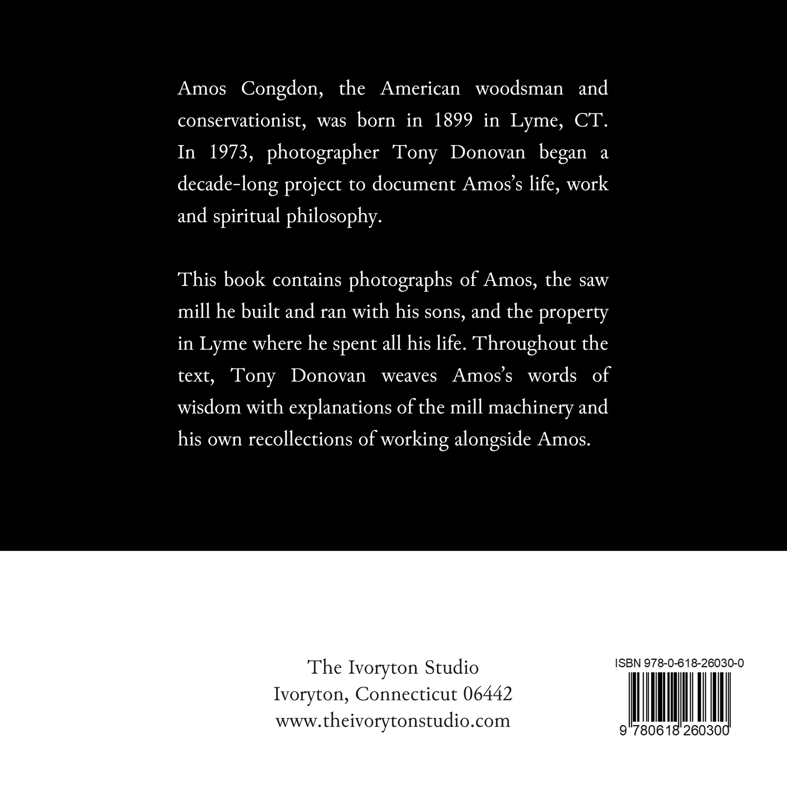
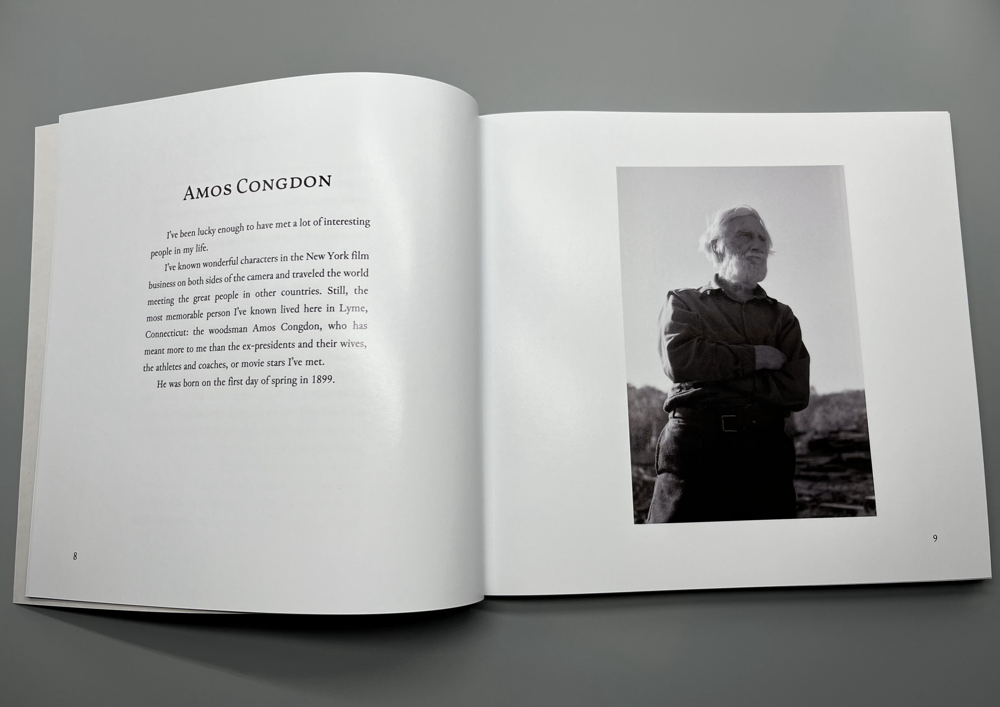
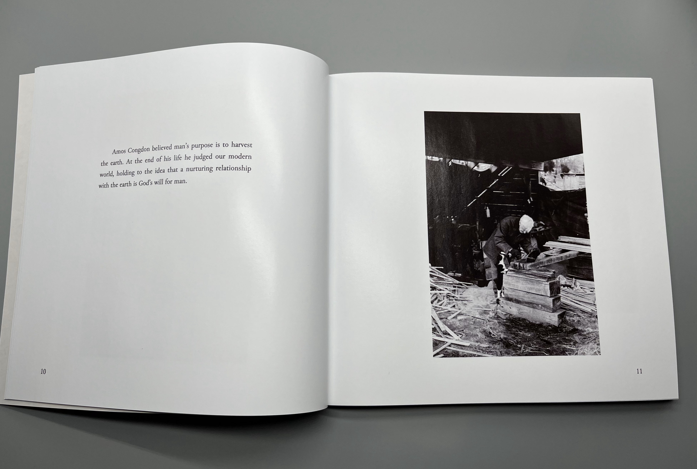
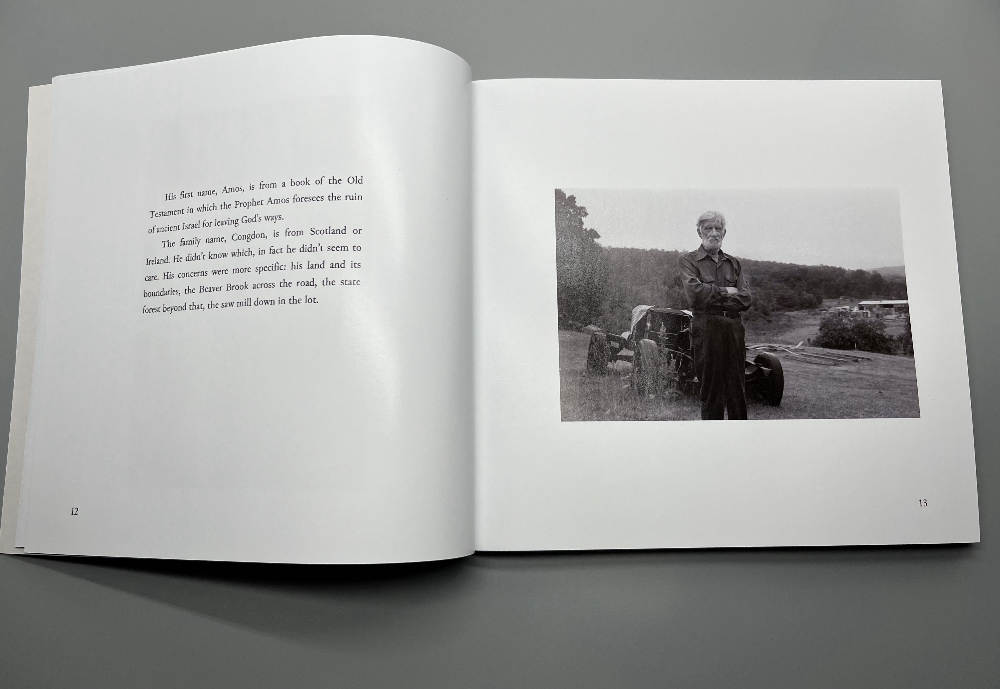
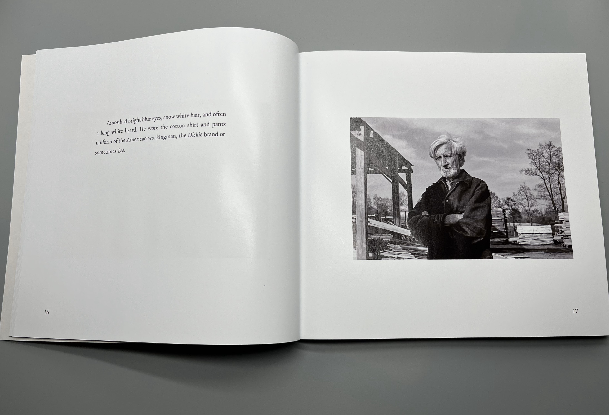
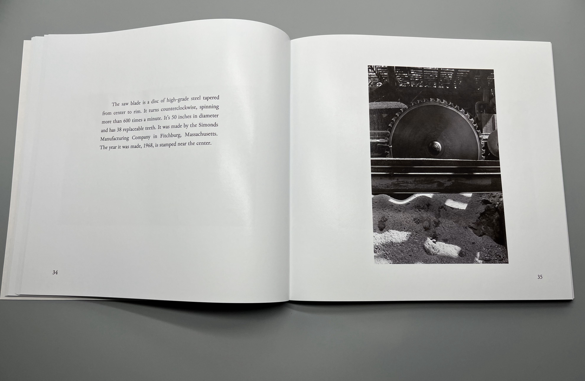

Amos Congdon






But for all his heavy thoughts he’d be the first to see the joke and laugh. Tell fond memories of school in the Pleasant Valley with the parsonage on one side and the library on the other. The sound of the racing river out back.
How sweet the wild grapes were then, when the fox runs traced the land, the stone where the hunter sat.